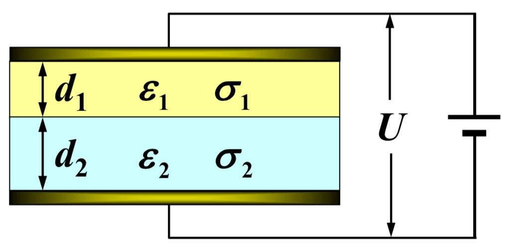

大学物理电磁学笔记¶
有错误欢迎指出~
12 静电场¶
\(e=1.6\times 10^{-19}\rm C\)
\(\vec F_{21}=k\frac{q_1q_2}{r_{21}^2} \vec {e}_{r21}\)
\(k=9\times 10^9\rm N\cdot m^2/C^2\)
\(k=\frac{1}{4\pi\varepsilon_0}\)
\(\varepsilon_0=8.85\times 10^{-12}\rm C^2/(N\cdot m^2)\)
\(1\rm V/m=1\rm N/C\)
\(E=\frac{\text d \Phi}{\text d S_\perp}\)
电通量: 通过面元的电场线条数 \(\vec E\cdot \text d \vec S\)
\(\oint_S \vec E\cdot \text d \vec S=\frac{1}{\varepsilon_0}\sum q_{in}\)
高斯定律比库仑定律更普遍
典型静电场¶
球面内 \(E=0\)
球面外 \(E=\frac{q}{4\pi \varepsilon_0}\frac{1}{r^2}\)
球体内 \(E=\frac{q}{4\pi \varepsilon_0}\frac{r}{R^3}=\frac{\rho}{3\varepsilon_0} r\)
球体外 \(E=\frac{q}{4\pi \varepsilon_0}\frac{1}{r^2}\)
长直导线 \(E=\frac{\lambda}{2\pi\varepsilon_0 r}\)
平面 \(E=\frac{\sigma}{2\varepsilon_0}\)
圆盘周线上的场强 \(E=\frac{\sigma x}{2\varepsilon_0}[\frac{1}{\sqrt{x^2+R_1^2}}-\frac{1}{x^2+R_2^2}]\)
电偶极子¶
沿 \(\vec p\) 方向的场强 \(\vec E=\frac{2\vec p}{4\pi \varepsilon_0 r^3}\)
中垂线上的场强 \(\vec E=-\frac{\vec p}{4\pi \varepsilon_0 r^3}\)
一般情况场强 \(\vec E=\frac{1}{4\pi \varepsilon_0 r^3}[\frac{3(\vec r\cdot \vec p)\vec r}{r^2}-\vec p]\)
力矩 \(\vec M=\vec p\times \vec E\)
13 电势¶
\(\oint\vec E\cdot \text d \vec r=0\)
\(U_{12}=\varphi_1-\varphi_2\)
\(\varphi=\int_P^{\infty}\vec E\cdot \text d \vec r\)
\(1\text V = 1\rm J/C\)
\(\vec E=-\nabla \varphi\)
一个电荷在电场中某点的电势能, 是属于该电荷与产生电场的电荷系所共有的, 是一种相互作用能
\(1\text e\text V=1.6\times 10^{-19}\rm J\)
电荷系在原来状态的静电能: 将电荷分散到无穷远 电荷间静电力所做的功
\(W=\frac{1}{2}\sum q_i \varphi_i=\frac{1}{2}\int_q \varphi \text d q\)
静电学中上式与 \(W=\int_V w_e \text d V=\int_V \frac{\varepsilon_0 E^2}{2}\text d V\) 等价
电偶极子电势 \(\varphi=\frac{p\cos \theta}{4\pi\varepsilon_0 r^2}=\frac{\vec p\cdot \vec e_r}{4\pi\varepsilon_0 r^2}\)
14 静电场中的导体¶
导体静电平衡的条件: \(\vec E_{in}=\vec{0}, \vec E_S \perp 表面\)
处于静电平衡的导体: \(\sigma=\varepsilon_0 E\)
有导体存在时静电场的计算: 静电场的基本规律, 电荷守恒, 导体静电平衡条件
静电屏蔽: 金属空壳的外表面上及壳外的电荷在壳内的合场强为 0, 因而对壳内无影响
唯一性定理：在给定条件下, 空间的电场分布和导体表面的电荷分布是唯一确定的 * (1) 给定每个导体的总电量 * (2) 给定每个导体的电势 * (3) 给定一些导体的总电量和另一些导体的电势
可简述为: 给定边界条件后, 静电场的分布就唯一地确定了
镜像法求电场
15 静电场中的介质¶
将介质插入电容器 \(U=U_0/\varepsilon_r\ E=E_0/\varepsilon_r\ \varepsilon_r>1\)
电荷分布不对称的分子: 极性分子, 有固有电矩
正负电荷中心重合: 非极性分子, 无固有电矩. 外加电场会产生比固有电矩小得多的感生电矩
出现在电介质表面的电荷叫面束缚电荷 / 面极化电荷
分子电矩 \(\vec p=q\vec l\)
电极化强度: 单位体积内分子电矩矢量和 \(\vec p=\frac{\sum \vec p_i}{\Delta V}\)
\(\vec P=n\vec p\), \(n\) 为电介质单位体积内的分子数, 单位 \(\rm C/m^2\)
电极化强度 \(\vec P=\varepsilon_0(\varepsilon_r -1)\vec E\)
电极化率 \(\chi =\varepsilon_r -1\)
面束缚电荷 \(\sigma ' = \vec P\cdot\vec e_n\) \(\vec e_n\) 由介质指向真空
体束缚电荷 \(q_{in} '=-\oint \vec P\cdot\text d\vec S\)
\(\rho'=-\nabla \cdot \vec P\)
电位移 \(\vec D=\varepsilon_0 \vec E+\vec P\)
\(\oint \vec D\cdot \text d \vec S=\sum q_{0in}\) \(q_{0in}\) 是自由电荷
\(\vec D=\varepsilon \vec E=\varepsilon_0\varepsilon_r \vec E\)
边界条件 \(E_{1t}=E_{2t}\) \(D_{1n}=D_{2n}\)
电容器 \(C=\frac{Q}{U}\)
电容器并联相加, 串联倒数相加
电介质填充两种规律 * (1) 按等势面填充: \(\vec {D}\) 不变, \(\vec {E}\) 变 * (2) 按电场线填充: \(\vec {D}\) 变, \(\vec {E}\) 的分布“样子”不变
电容器的能量 \(W=\frac{1}{2}CU^2=\frac{1}{2}QU=\frac{1}{2}\frac{Q^2}{C}\)
电场中的能量体密度 \(w_e=\frac{1}{2}DE=\frac{1}{2}\varepsilon E^2\)
电场中的能量 \(W=\int \frac{1}{2}\varepsilon E^2 \text d V\)
电容器公式¶
平行板电容器 \(C=\frac{\varepsilon S}{d}\)
圆柱形电容器 \(C=\frac{2\pi L\varepsilon}{\ln (R_2/R_1)}\)
球形电容器 \(C=\frac{4\pi R_1 R_2 \varepsilon}{R_2-R_1}\)
球形孤立导体电容器 \(C=4\pi R\varepsilon\)
16 恒定电流¶
电流 \(I\) 又叫电流强度
电流密度 \(\text d I=\vec J\cdot \text d \vec S\)
电流 / 电流密度通亮 \(I=\int_S \vec j \cdot \text d \vec S\)
\(\vec J=qn\vec v\)
\(I=\int_S \vec J\cdot \text d \vec S=-\frac{\text d q_{in}}{\text d t}\)
微分形式 \(\frac{\partial \rho}{\partial t}+\nabla \cdot \vec j=0\)
若 \(\oint_S \vec J\cdot \text d \vec S=0\), 则 I 为恒定电流
恒定电场与静电场都服从高斯定律和场强环路积分为零的环路定理
\(R=\rho\frac{l}{S}=\frac{l}{\sigma S}\)
\(\vec J=\sigma \vec E\)
物质导电性能方程 \(\vec j=\sigma\cdot\vec E\)
\(\vec j=\sigma\cdot\vec E\) 比 \(U=IR\) 适用范围更广, 对非均匀导体成立, 对非稳恒电流也成立
稳恒电流和静电场的综合求解的基本方程:
稳恒条件 \(\oint_S \vec J\cdot \text d \vec S=0\)
环路定理 \(\oint \vec E\cdot \text d\vec l=0\)
欧姆定律 \(\vec j=\sigma\cdot\vec E\)
界面关系 \(j_{1n}=j_{2n}\), \(E_{1t}=E_{2t}\)
电容器充电和放电¶
充电
\(q=C\varepsilon(1-e^{-\frac{t}{RC}})\)
\(i=\frac{\varepsilon}{R}e^{-\frac{t}{RC}}\)
\(u_c=\varepsilon(1-e^{-\frac{t}{RC}})\)
放电
\(q=Qe^{-\frac{t}{RC}}\)
\(i=\frac{Q}{RC}e^{-\frac{t}{RC}}\)
\(u_c=\frac{Q}{C}e^{-\frac{t}{RC}}\)
电容器时间常量 \(\tau =RC\) 若回路的线度比距离 \(c\tau\) 小得多，电场可按恒定电场处理
例题¶
在平行板电容器内填充两层导电介质, 厚度、介电常数和电导率分别为 \((d_{1}, \varepsilon_{1}, \sigma_{1})\)
和（\(d_2, \varepsilon_{2}, \sigma_{2}\) ），设电容器两端电压为 \(\vec{U}\)

求:
- (1)两介质中的电流密度和电场强度。
- (2)介质分界面上的总电荷面密度 \(\sigma_{e}\) 和自由电荷面密度 \(\sigma_{e 0}\)
解:
(1)由对称性和界面关系: \(j_{1}=j_{2}=j\)
电场强度: \(\quad E_{1}=\frac{j}{\sigma_{1}}, \quad E_{2}=\frac{j}{\sigma_{2}}\)
电压关系: \(\quad U=E_{1} d_{1}+E_{2} d_{2}\)
解得: \(\quad j_{1}=j_{2}=j=\frac{\sigma_{1} \sigma_{2}}{\sigma_{1} d_{2}+\sigma_{2} d_{1}} U\)
\(E_{1}=\frac{\sigma_{2}}{\sigma_{1} d_{2}+\sigma_{2} d_{1}} U, \quad E_{2}=\frac{\sigma_{1}}{\sigma_{1} d_{2}+\sigma_{2} d_{1}} U\)
(2)在界面选扁柱画作少高斯面 \(S\)
分别用 \(\vec{E}\) 和 \(\vec{D}\) 的高斯定理:
\(\sigma_{e}=\varepsilon_{0}\left(E_{2}-E_{1}\right)=\frac{\varepsilon_{0}\left(\sigma_{1}-\sigma_{2}\right)}{\sigma_{1} d_{2}+\sigma_{2} d_{1}} U\)
\(\sigma_{e 0}=D_{2}-D_{1}=\varepsilon_{2} E_{2}-\varepsilon_{1} E_{1}=\frac{\varepsilon_{2} \sigma_{1}-\varepsilon_{1} \sigma_{2}}{\sigma_{1} d_{2}+\sigma_{2} d_{1}} U\)
17 磁场和它的源¶
在所有情况下, 磁力都是运动电荷之间相互作用的表现.
洛伦兹力 磁感应强度 \(\vec F=q\vec v\times\vec B\)
\(1\text T=10^4\rm G\)
磁通量 \(\Phi=\int_S \vec B\cdot\text d\vec S\)
毕奥 - 萨伐尔定律 \(\text d \vec B=\frac{\mu_0}{4\pi}\frac{I\text d\vec l\times\vec e_r}{r^2}\)
真空磁导率 \(\mu_0=\frac{1}{\varepsilon_0 c^2}=4\pi\times 10^{-7}\rm N/A^2\)
\(c=\frac{1}{\sqrt{\mu_0\varepsilon_0}}\)
磁通连续性定理 \(\oint \vec B\cdot\text d\vec S=0\)
\(\text d \vec B=\frac{\mu_0}{4\pi}\frac{q\vec v\times\vec e_r}{r^2}\)
安培环路定理 \(\oint \vec B\cdot \text d \vec r =\mu_0\sum I_{in}\)
\(\oint\vec B\cdot\text d\vec r=\mu_0\int_S\left(\vec J_c+\varepsilon_0\frac{\partial \vec E}{\partial t}\right)\cdot \text d \vec S\)
传导电流 \(I_c\)
位移电流 \(I_d=\varepsilon_0 \frac{\text d\Phi}{\text d t}=\varepsilon_0\frac{\text d}{\text d t}\int_S\vec E\cdot \text d\vec S\)
位移电流密度 \(\vec J_d=\varepsilon_0\frac{\partial \vec E}{\partial t}\)
全电流 \(I=I_c+I_d\)
典型电流分布的磁场¶
无限长直电流 \(B=\frac{\mu_0 I}{2\pi r}\)
一段直导线 \(B=\frac{\mu_0 I}{4\pi r}(\cos \theta_1-\cos \theta_2)\)
无限长均匀载流薄圆筒 \(B_ 内 =0, B_ 外 =\frac{\mu_0 I}{2\pi r}\)
无限长直载流密绕螺绕管 / 螺绕环 \(B_ 内 =\mu_0 n I, B_ 外 =0\) 对于螺绕环 \(n=\frac{N}{2\pi r}\)
无限大平面电流 \(B\cdot 2l=\mu_0 j l\)
圆电流圈中心点和轴线上的磁场 \(B_{中心}=\frac{\mu_0 I}{2R}, B_{轴线}=\frac{\mu_0 IS}{2\pi(R^2+x^2)^{3/2}}\)
磁矩¶
\(\vec B=\frac{\mu_o}{4\pi r^3}[\frac{3(\vec r\cdot \vec m)\vec r}{r^2}-\vec m], (r>> 磁矩线度)\)
磁矩、电流圈在外磁场中的势能 \(W=-\vec m\vec B_ 外 =-IS\cdot \vec B_ 外\)
例题¶
半径 \(R\) 的圆形平行板电容器内充满介电 常数 \(\varepsilon\) 、磁导率 \(\mu\) 的均匀介质，如图已知电容器充电时的 \(\frac{\mathrm{d} E}{\mathrm{d} t}\) 及其方向，忽略边缘效应
求:\(i_d\)和\(B_p\) \((r<R)\)
对圆面 \(S\) 有:
\(I_{d} =\iint_{S} \frac{\partial \vec{D}}{\partial t} \cdot \mathbf{d} \vec{S}=\iint_\vec{s}\varepsilon\frac{\mathbf{d} \vec{E}}{\mathbf{d} t}\mathbf{d} \vec{S}=\varepsilon \frac{\mathbf{d}\vec{E}}{\mathbf{d} t}\pi R^2\)
过 P点垂直轴线作环形回路 \(L\), 方向和圆面 \(S^{\prime}\) 成右手关系:
\(\oint_{L} \vec{H} \cdot \mathbf{d} \vec{l}=\vec{H} \cdot \vec{2} \pi \vec{r}=\sum \vec{I}_{d内}\)
\(\sum I_{d内}=\iint_{S^{\prime}} \frac{\partial \vec{D}}{\partial t} \cdot \mathbf{d} \vec{S}=\pi r^{2} \vec{\varepsilon} \frac{\mathbf{d} \vec{E}}{\mathbf{d} t}\)
\(H_{P}=\frac{\varepsilon r}{2} \frac{d E}{d t}\)
\(B_{P}=\mu H_{P}=\frac{\mu \varepsilon r}{2} \cdot \frac{d E}{d t}\)
18 磁力¶
\(r=\frac{mv}{Bq}\)
\(T=\frac{2\pi m}{Bq}\)
螺旋运动的螺距 \(h=\frac{2\pi m}{Bq}v_{//}\)
霍尔效应 \(U_H=\frac{IB}{nqb}\)
\(\vec F=\int_L I\text d \vec l\times \vec B\)
磁矩 \(\vec m=SI\vec e_n\)
力矩 \(\vec M=\vec m\times \vec B\)
19 磁场中的磁介质¶
\(B=\mu_r B_0\), \(\mu_0\) 为相对磁导率
磁化强度 \(\vec M=\frac{\sum \vec m_i}{\Delta V}\)
\(\vec M=\frac{\mu_r-1}{\mu_0\mu_r}\vec B\)
面束缚电流密度 \(\vec j'=\vec M\times \vec e_n\)
总束缚电流 \(I'=\oint \text d I'=\oint_L\vec M\cdot \text d \vec r\)
磁感应强度 \(\vec B=\vec B_0+\vec B'\)
磁场强度 \(\vec H=\frac{\vec B}{\mu}=\frac{\vec B}{\mu_0}-\vec M\)
\(\oint_L \vec H\cdot \text d \vec r=\sum I_{0in}\)
磁场的边界条件 \(H_{1t}=H_{2t}\), \(B_{1n}=B_{2n}\)
磁感线穿过两介质分界面 \(\frac{\tan \theta_1}{\tan \theta_2}=\frac{\mu_{r1}}{\mu_{r2}}\)
用封闭铁盒可以实现磁屏蔽
20 电磁感应¶
感应电动势 \(\mathscr{E}=\frac{\text d \Psi}{\text dt}=-N\frac{\text d \Phi}{\text d t}\)
当穿过各匝线圈的磁通量相等时,N 匝线圈的全磁通为 \(\Psi=N\Phi\)
动生电动势 \(\mathscr E=\oint_L(\vec v\times\vec B)\text d\vec l\)
\(|\mathscr E|=Blv\)
感生电动势 \(\oint_L\vec E_i\cdot \text d\vec l=-\frac{\text d\Phi}{\text dt}=-\int_S \frac{\partial \vec B}{\partial t}\cdot \text d\vec S\)
其中 \(E_i\) 表示感生电场, 由于静电场的环路积分为零, 所以
\(\oint_L\vec E\cdot \text d\vec r=-\int_S \frac{\partial \vec B}{\partial t}\cdot \text d\vec S\)
\(\Psi_{21}=M_{21}i_1\)
\(\mathscr E_{12}=-\frac{\text d\Psi_{21}}{\text dt}=-M_{21}\frac{\text di}{\text dt}\)
\(M_{21}\) 是回路 \(L_1\) 对回路 \(L_2\) 的互感系数, 固定回路的互感系数是一个常数,\(M_{21}=M_{12}=M\), \(M\) 称作这两个导体回路的互感系数, 简称他们的互感
\(\mathscr E_{L}=-\frac{\text d\Psi}{\text dt}=-L\frac{\text di}{\text dt}\), \(L=\frac{\Psi}{i}\) 为自感系数, 简称自感
自感磁能 \(W_m=\frac{1}{2}LI^2\)
磁场的能量 \(W_m=\frac{B^2}{2\mu}V=\int \frac{BH}{2}\text dV\)
磁能量密度 \(w_m=\frac{1}{2}BH\)
21 麦克斯韦方程组和电磁辐射¶
真空中的电磁场规律
有介质的情况下
表述为微分形式
对于各向同性的线形介质, 有
洛伦兹力公式
\(\vec{F}=q\vec{E}+q\vec{v}\times\vec{B}\)
界面关系
平面电磁波是横波¶
右手关系 \(\frac{\vec{E}}{E}\times\frac{\vec H}{H}=\frac{\vec u}{u}\)
振幅关系 \(\sqrt{\mu}H=\sqrt{\varepsilon}E\)
\(\frac{E}{B}=\frac{1}{\sqrt{\varepsilon\mu}}=u\)
波速、折射率 \(u=\frac{1}{\sqrt{\varepsilon\mu}}\) \(c=\frac{1}{\sqrt{\varepsilon_0\mu_0}}\) \(n=\sqrt{\varepsilon_r\mu_r}\) \(u=\frac{c}{n}\) (对于非铁磁质 \(n=\sqrt{\varepsilon_r\mu_r}\approx\sqrt{\varepsilon_r}\))平面电磁波的能量密度 \(w=\varepsilon E^2=\frac{EH}{u}\)
单位时间内通过与传播方向垂直的单位面积的能量, 叫电磁波的能流密度, 其时间平均值就是电磁波的强度. 能流密度矢量 \(\vec S\) 又被称作波印亭矢量
\(\vec S=\vec E\times\vec H\)
\(\vec S_{//}\) 沿导线由电源传向负载
\(\vec S_{\perp}\) 沿径向由外向内传播，补偿导线的焦耳热损耗
电磁波质量密度 \(m=\frac{w}{c^2}=\frac{EH}{c^2u}\)
电磁波动量密度 \(\vec g=m\vec u=\frac{1}{c^2}\vec E\times\vec H=\frac{\vec S}{c^2}\)
辐射压强 全反射 \(p_r=2g\cdot c=2\frac{EH}{c}\) 全吸收 \(p_r'=g\cdot c=\frac{EH}{c}\)